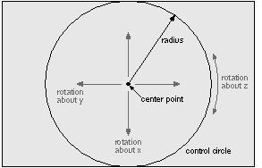

Copyright ©1995 by NeXT Computer, Inc. All Rights Reserved.
| N3DRotator |
| Inherits From: | Object | |
| Declared In: | 3Dkit/N3DRotator.h |
| Class Description |
| N3DRotator provides API for performing rotations on objects in a scene created with the 3D Graphics Kit. The user interface model implemented by the N3DRotator is called a virtual sphere--a trackball-style control for 3D transformations. To the user, the rotator provides direct manipulation of objects in a 3D application. To the programmer, the rotator provides a reusable object for implementing this direct manipulation. Note, however, that the N3DRotator class doesn't provide any on-screen representation to the user: It simply provides a way to convert the offset between two points in 2D coordinates into rotations on 3D matrices. |
|  |
| Figure 17-9. N3DRotator
The N3DRotator's center point defines the point--in the 2D coordinates of the camera's bounds--about which the effect of cursor movement is centered. With the center point, the radius defines the rotator's control circle. Cursor movement within this circle controls x- and y-axis rotation; cursor movement outside the circle controls z-axis rotation. The default center point is the center of the rotator's camera's bounds rectangle. By default, the radius is set at one-half the smaller of the width or height of the camera's bounds. Thus, the default control circle fits entirely within the bounds of the rotator's camera. The default center and radius are set when the rotator is first initialized, and are not reset if the camera is resized. Note that the center point is the center of user manipulation in 2D coordinates, not of the resulting rotation. The origin of the rotation produced by N3DRotator is the origin of the space to which rotation is applied. The heart of N3DRotator's operation is the trackMouseFrom:to:rotationMatrix: andInverse: method. Invoked from within an N3DCamera's mouseDown: method, this method accepts two points in the camera's coordinate system and returns two three-dimensional matrices--one representing a rotation, the other an inverse of that rotation. These matrices can be applied to the camera or to the shapes in the scene viewed by the camera. The description for trackMouseFrom:to:rotationMatrix:andInverse: includes a code example for rotating the camera and its world shape. N3DRotator also has methods for setting the center and radius of the virtual sphere, for attaching to a camera, and for setting the axes about which rotations are applied. |
| Instance Variables |
| id camera;
NXRect bounds; NXPoint center; float radius; N3DAxis rotationAxis; |
| camera | The rotator's N3DCamera | |
| bounds | Bounds of cursor movement effect | |
| center | Center of the control circle | |
| radius | Radius of the control circle | |
| rotationAxis | Axes about which rotation is applied |
| Method Types |
| Initializing |
| Setting |
| Axes of rotation |
| Mouse tracking | ||
| Archiving |
| Instance Methods |
| init |
| Initializes the receiver, a newly allocated N3DRotator instance with no camera. |
| initWithCamera: |
| Initializes the receiver, a newly allocated N3DRotator instance. Uses the setCamera: method to set aCamera as the receiver's camera. This method is the designated initializer for N3DRotator. Returns self.
See also: |
| rotationAxis |
| Returns the current axes of rotation for the N3DRotator. The N3DAxis enumerated types returned by this method are defined in the header file 3Dkit/next3d.h and are listed with the setRotationAxis: method.
See also: |
| read: |
| Reads the receiver from the typed stream stream.
See also: |
| setCamera: |
| Sets aCamera as the receiver's camera. The receiver's bounds is set to the bounds of aCamera, its center point is placed at the center of the bounds, and its radius is set to half the smaller of the width or height of the bounds.
See also: |
| setCenter:andRadius: |
| Sets the receiver's center point and radius. Together, these define the control circle of the rotator, as described and illustrated in the class description. |
| setRotationAxis: |
| Sets the axes about which the receiver's rotations are applied. The N3DAxis enumerated types returned by this method are defined in the header file 3Dkit/next3d.h. They are: |
| N3D_AllAxes N3D_XAxis N3D_YAxis N3D_ZAxis N3D_XYAxes N3D_XZAxes N3D_YZAxes |
| The rotation axes set by this method affect the matrices returned by the trackMouseFrom:to:rotationMatrix:andInverse: method. For example, when the rotation axis is set to N3D_AllAxes, the matrices are transformed to represent rotations about all three axes. When set to N3D_Xaxis, the matrices are transformed to represent only rotation about the x axis; that is, the rotator's effect is restricted to the x axis.
See also: |
| trackMouseFrom:to:rotationMatrix:andInverse: |
| to:(const NXPoint *)thisPoint rotationMatrix:(RtMatrix)theRotation andInverse:(RtMatrix)theInverse |
| Accepts two points and uses the offset between them to calculate virtual sphere rotations on two matrices. Your application typically invokes this method from within a mouseDown: method in a subclass of N3DCamera. In addition to the rotations returned by reference in theRotation and theInverse, this method returns self.
The first two arguments represent cursor positions from NX_MOUSEDOWN or NX_MOUSEDRAGGED events. lastPoint is the previous position of the cursor, thisPoint is the most recent position of the cursor. The rotations applied to theRotation and theInverse may be about one, two, or three axes, depending on the value set by setRotationAxis:. By default, rotations are applied to all axes. The direction of mouse movement between lastPoint and thisPoint determines the affected axes: Horizontal movement inside the control circle rotate about the y-axis, vertical moves inside the circle rotate about the x-axis. Horizontal or vertical moves outside the circle rotate about the z-axis. This behavior is described and illustrated in the class description. This method does not concatenate the new rotations on existing values in the matrices; any data passed to this method in theRotation and theInverse is simply ignored. The way you apply the returned matrices theRotation and theInverse depends on the effect you want to produce in the space being rotated. For example, to rotate an N3DShape (and its descendants) in its own space, you postmultiply theRotation. To rotate a shape (and descendants) in its ancestor's space, you premultiply theRotation. The following code fragment demonstrates the implementation of a mouseDown: method within an N3DCamera subclass, using trackMouseFrom:to:rotationMatrix: andInverse: to rotate either the camera or its world shape. |
 {
{
 id myRotator
id myRotator
 BOOL shouldPreMultiply
BOOL shouldPreMultiply
 int applyRotation
int applyRotation
 }
}
 ...
...
 mouseDown:(NXEvent *)theEvent
mouseDown:(NXEvent *)theEvent
 {
{
 RtMatrix theRotation, theInverse, thePreTransform
RtMatrix theRotation, theInverse, thePreTransform
 NXPoint lastPoint, thisPoint;
NXPoint lastPoint, thisPoint;
 [self setUsePreTransformMatrix:YES];
[self setUsePreTransformMatrix:YES];
 while (/* modal loop tracks mouse-dragged events */) {
while (/* modal loop tracks mouse-dragged events */) {
 ...
...
 [myRotator trackMouseFrom:&lastPoint to:&thisPoint
[myRotator trackMouseFrom:&lastPoint to:&thisPoint
 rotationMatrix:theRotation andInverse:theInverse];
rotationMatrix:theRotation andInverse:theInverse];
 switch (applyRotation) {
switch (applyRotation) {
 case TO_CAMERA :
case TO_CAMERA :
 [self getPreTransformMatrix:thePreTransform];
[self getPreTransformMatrix:thePreTransform];
 if (shouldPreMultiply)
if (shouldPreMultiply)
 N3DMultiplyMatrix(thePreTransform,
N3DMultiplyMatrix(thePreTransform,
 theRotation, thePreTransform);
theRotation, thePreTransform);
 else
else
 N3DMultiplyMatrix(theRotation,
N3DMultiplyMatrix(theRotation,
 thePreTransform, thePreTransform);
thePreTransform, thePreTransform);
 [self setPreTransformMatrix:thePreTransform];
[self setPreTransformMatrix:thePreTransform];
 break;
break;
 case TO_WORLD :
case TO_WORLD :
 [worldShape concatTransformMatrix:theRotation
[worldShape concatTransformMatrix:theRotation
 premultiply:shouldPreMultiply];
premultiply:shouldPreMultiply];
 break;
break;
 }
}
 [self display];
[self display];
 }
}
 [self display];
[self display];
 return self;
return self;
 }
}
| write: |
| Writes the receiver to the typed stream stream.
See also: |